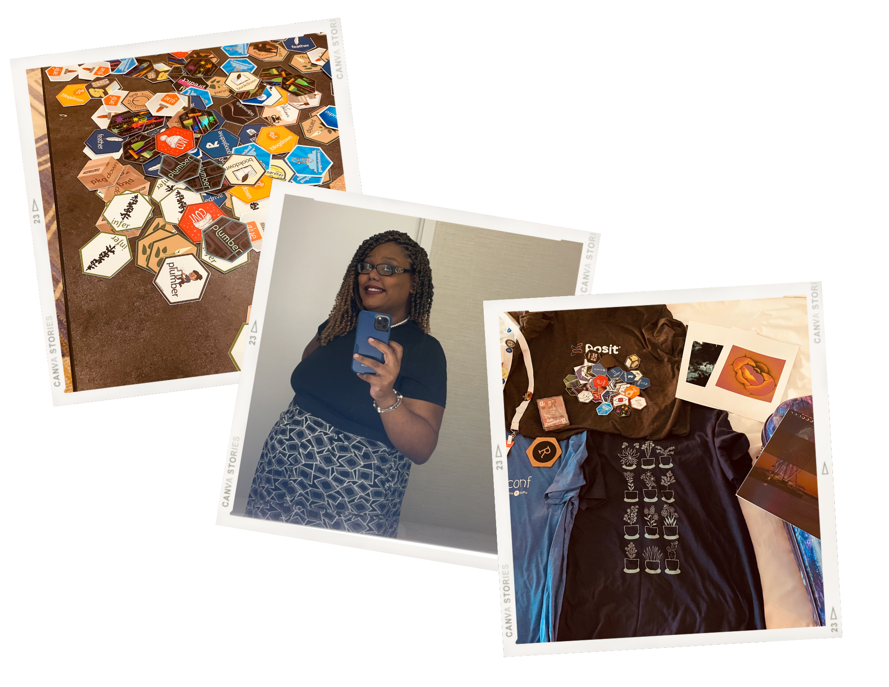

![]()
Yes, hello. It’s been a while. I have been neglecting The Tidy Trekker as of late (and to be honest, I still might this year after this overhaul is done, but we’ll see.) I had all the intentions of being super active here in 2022, but life happened. The good news is, instead of the usual negative BS, I was inundated with EXCELLENT things in 2022. I was afraid to even step into 2023 for fear that all my good luck would “run out” this year. (I’m joking, btw life is what you make it, and your enjoyment of it depends on a lot of things like perspective, if you need/go to therapy, circumstances, etc.)
But enough general rambling; let’s start with some targeted rambling. So what happened in 2022?
In this post:
Conferences and Talks
So this one is probably the most known. I had A LOT of talks to prepare for and do. Some of you may have found out about me through one of the various talks I did in 2022. Most of the talks were about #rtistry (generative art in the R language), but I also gave more practical ones. The biggest one was obviously RStudio::Conf(2022). This was BY FAR the best conference experience I ever had despite being pregnant and in the middle of so many life-changing things all at once. I was literally onboarding at my new job and had jumped on a plane to D.C. less than a few days after unexpectedly closing on my first home. It was an absolute cluster of chaotic good.
At the conference, I assisted with the Making Art From Code workshop, was a diversity scholar, and gave my own talk, “Making Data Pipelines in R.”
Side note. If you LOVE R and are on the fence about ever going to a (Now Posit) conference, you should go if you can! In the past, if you submit a presentation or even a lightning talk, Posit has provided traveling and boarding assistance. If you are from an underrepresented group in tech, you can also apply for a diversity scholarship. It’s a great way to gain any needed assistance as well. Just like how Twitter used to be great (before the Twitter Exodus), imagine having that in real life for a few days. It was awesome. And I mean, come on, who doesn’t like stickers???

So…Many…STICKERS!!!!
Job Change
One of the cool things about attending the conference was that I could meet some of my co-workers in real life! I recently changed jobs in 2022. I now work at the Prostate Cancer Clinical Trials Consortium (PCCTC) at Memorial Sloan Kettering Cancer Center. This has been a significant change so far, as it has allowed me to stop working so much. I went from having three jobs to one full-time one (and a Per Diem contract one if needed from time to time.)
At the time of writing this, I’m on parental leave now, but I’m excited to get to work when I get back. Some of my work will focus on streamlining internal stuff for reporting on prostate cancer studies, and I’m SUPER hyped about it. I’ve been using R for about four, going on five years now, and I think I’m finally starting to hone in on my “niche.” Besides making art with R, I get a lot of satisfaction from automating things. Building (hopefully) seamless pipelines that make work easier for people. I realized I’d rather spend months building pipelines than doing analyses, external client-facing, and the like. In other words, my current role as a data scientist in this capacity perfectly aligns with my pragmatic interests. Honestly, I’m super lucky there.
Family and Home Changes
Working at the PCCTC also went perfectly with home life. For those of you that missed it, I was very open about my infertility struggles after I got pregnant. But as life would have it, after trying aggressively for three years, I got pregnant right before I found out about the open position at the PCCTC. I almost didn’t apply for it because it felt wrong to do so, knowing that I would have to leave for parental leave.
Looking back, switching jobs was the best thing I could have done. I could support myself financially, stop trying to run a one-person data science team (like I had to do at my old job), and really just focus on working while learning new things everyday. An added bonus is being able to spend time getting to know my son and just being grateful that all the years of feeling like I was working myself to death eventually paid off (yes, even during late nights while I was on the verge of tears trying to console a crying baby üòÖ)
I have a lot to be grateful for. I feel like I have changed so much as a person and that I am really coming into the best version of myself that I can be. Whether we’re talking professionally or personally.
So, What About 2023?
So… what’s next? Honestly, this year I’d like to “lay low.” I want to actively stay home, study up on things, be a mother, and work. That’s all I want. So, professionally speaking, this is what I’ve got on my to-do list for 2023:
Get projects done/foundations started at work (This has to be done as I have to work lol)
Open up my online art store (This doesn’t have to be done, but I probably should since I already made the store and everything.)
Re-launch the new version of my website (If you’re reading this, that means I did this! Go Me!!!)
Contribute to the textbook “Rtistry: Methods for Visual Generative Art Using R” along with Antonio Paez, Antonio Sanchez, and Jacquie Tran. (This has to be done as a contract was signed)
That’s it. If I have energy for a blog post here or there, or if my job wants to send me to Chicago for Posit Conf this year (Travis, pls.) Then I’ll do that. But the goal is to work “passively” this year (if that makes any sense at all.)